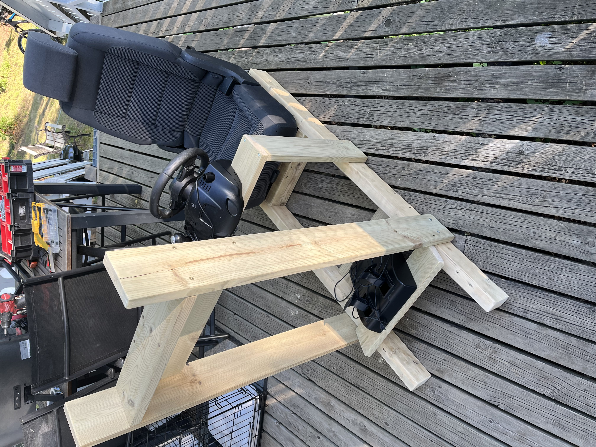

Jeg har alltid vært interrest i datamaskiner og elektronikk siden jeg var ung. Jeg har alltid lekt med kameraer, sensorer og roboter, siden det var alltid så interresangt å lage noe som gjør noe. Jeg har også lenge jobbet med dataprogrammer som Unity, Blender, Davinvci Resolve (17) og mange andre som lar meg skape noe nytt og utvikle meg selv.

Jeg liker også veldig å jobbe med hendene mine. Skape noe i den virkelige verden, og ikke bare noe på skjermen til en datamaskin. Ting jeg har bygget av treverk er en liten pult på omkting 80x60 cm, og en "Sim Rig", som det er bilde av her. Jeg har også oppgradert PC-en min flere ganger, men jeg fikk aldri bygget en fra starten, noe som er synd, men som fortsatt var en spennende og lærerik opplevelse.

På fritiden min, når jeg ikke trenger å jobbe eller drive med skolearbeid, liker jeg å spille videospill. Jeg antar at ganske mange gjør det, men det er ofte en veldig avslappende opplevelse, som lar deg glemme hverdagens oppgaver og bare ikke tenke for en liten stund. Skytespill tror jeg at kan forbedre øye-hånd koordinasjonen og respostid, så det er de jeg er mest investert i. Utenom det klarer jeg å investere meg dypere i et prosjekt, som da jeg spilte Forza Horizon 4 og bygde en "Sim Rig" av tre for å spille bedre.

Når jeg ikke har vært i kontakt med noen som heldst på en lengre periode (1 uke), begynner jeg å tenke på å ta kontakt med en av vennene mine for å prate om livet. Hvordan ting har vært og hvordan de blir, snakker vi om. Jeg foretrekker når det er ferre folk (ikke mer enn 4), slik at samtalene kan forbli dype, og at gruppen fortsatt er under kontroll.